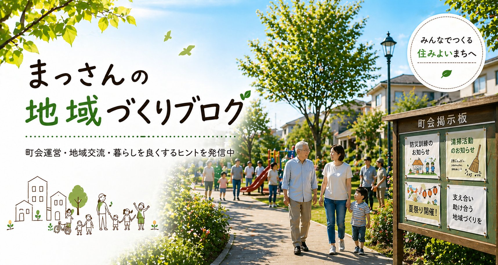

こんにちは、まっさんです。
「みんな賛同してくれるかな」と不安を書いて臨んだ、9月30日の合同班長会議。結果を報告します。
正直、ほっとしました。店番は手の空いている方で、常時3〜4名が目安です。中身は「お菓子くじ」と「町会員限定の豪華抽選」の2本立てになりました。
先日の日記では「1世帯1回か、子どもの人数分か」で悩んでいましたが、1回100円で誰でも何回でも、というシンプルな形に落ち着きました。地蔵盆で好評だった「自分で選ぶ」方式も取り入れています。
景品は1日あたり約5万円分。ギフトカードと、町会内の飲食店4店のお食事券を考えています。本数はこれから決めます。当日その場で入会された方も抽選に参加できるようにする案も出ていて、こちらも検討中です。
模擬店の時間は、地車が神社に戻ってくる昼の時間帯（13時〜14時ごろ）が候補です。地車の団体さんに時間を確認してから決めます。
チラシは班長さんの一人が作ってくださることになり、各班長さんが全世帯にポスティングしてくれます。町会に入っていない方にどう届けるかが悩みでしたが、全世帯配布ならその心配もなくなります。お菓子とジュースの買い出しは2〜3名で、日程はLINEで調整です。
会議の前は「そこまでせんでも」と言われるかと身構えていましたが、反対どころか、チラシ作りや買い出しを自分から引き受けてくれる方もいました。一人で抱え込まずに、まず全部テーブルに出してみてよかったです。
次は、地車の団体さんとの時間調整と、飲食店さんへのお食事券の相談です。また書きます。
ほな、また。